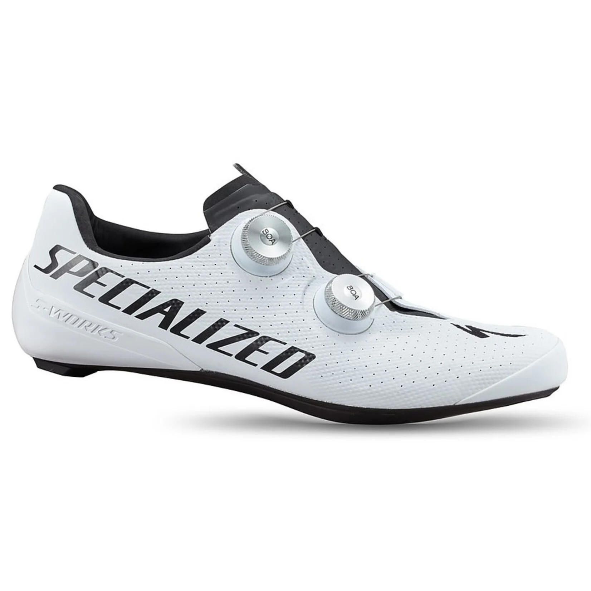
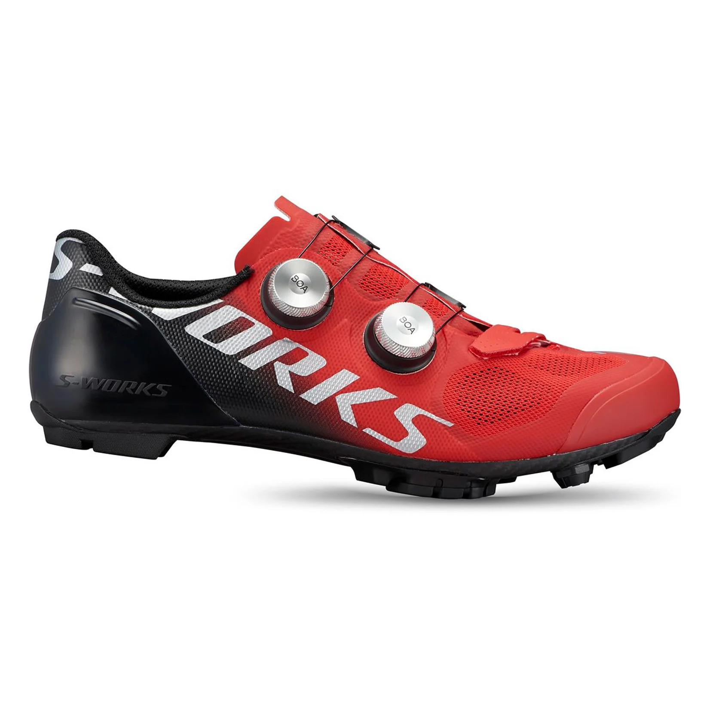
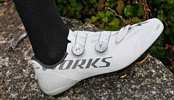
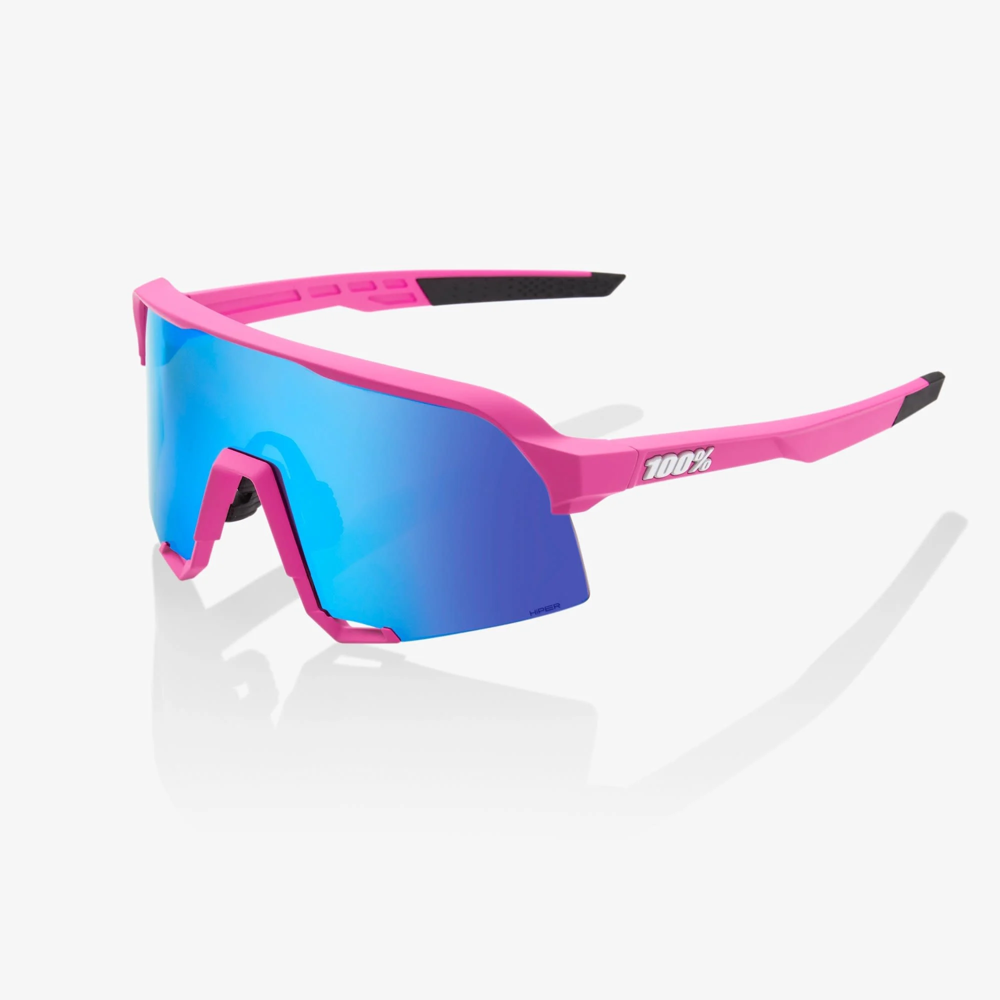

LO MEJOR DE CICLISMO
LO MEJORES ACCESORIOS
| CASCOS | PRECIOS | DESCRIPCION |
|---|---|---|
 |
6700.50 | El casco S-Works Prevail 3 es perfecto para los ciclistas que valoran la comodidad |
 |
$6050.70 | El casco S-Works Prevail 3 es perfecto para los ciclistas que valoran la comodidad |
 |
$6250.54 | El casco S-Works Prevail 3 es perfecto para los ciclistas que valoran la comodidad |
 |
$6200.40 | El casco S-Works Prevail 3 es perfecto para los ciclistas que valoran la comodidad |
LO MEJORES ACCESORIOS
| ZAPATILLAS DE RUTA Y MONTAÑA | PRECIOS | ESPECIFICACIONES |
|---|---|---|
|  | $3,999 | Nuestra zapatilla con apriete más segura y ajustada para una máxima potencia, con un 44% menos de presión en el antepié. |
|  | $3,799 | Nuestra zapatilla con apriete más segura y ajustada para una máxima potencia, con un 44% menos de presión en el antepié. |
|  | $2,299 | Nuestra zapatilla con apriete más segura y ajustada para una máxima potencia, con un 44% menos de presión en el antepié. |
|  | $2,999 | Nuestra zapatilla con apriete más segura y ajustada para una máxima potencia, con un 44% menos de presión en el antepié. |
| LO MEJOR DE CICLISMO | |
|---|---|
| INICIO | FUTBOL AMERICANO | BICICLETAS PROFESIONALES | ACCESORIOS DE CICLISMO |